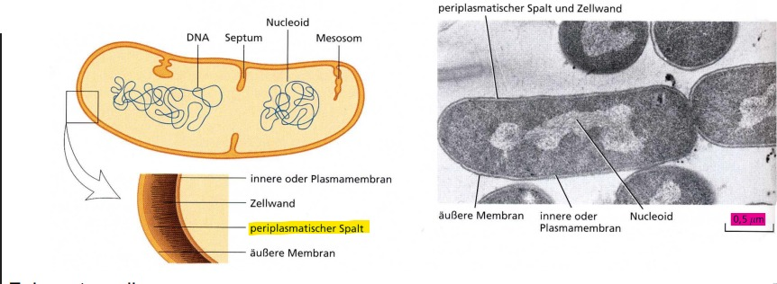

Was ist das Leben ?

Wrm ist d. Virus kein Lebewesen ?
- Kann sich ohne Wirtszelle nicht fortpflanzen & betreibt keinen eigenen Stoffwechsel
Was sind Merkmale v. lebenden Zellen ?
- V. Plasmamembran umhüllt -> werden v. Nähr- & Abfallstoffen durchquert
- Leben v. freier(kostenloser) Energie -> entziehen aus -> Umgebung
- Gleiche Organellen; Reaktionen & Prozesse
- Transkription und Replikation durch Polymerisation (DNA-/RNA-Polymerase)
- Enzyme = katalysatoren
- Erbinformationen -> speichern -> DNA
- RNA
- RNA -> Proteine(Ribosomen)
Prokaryotenzelle
